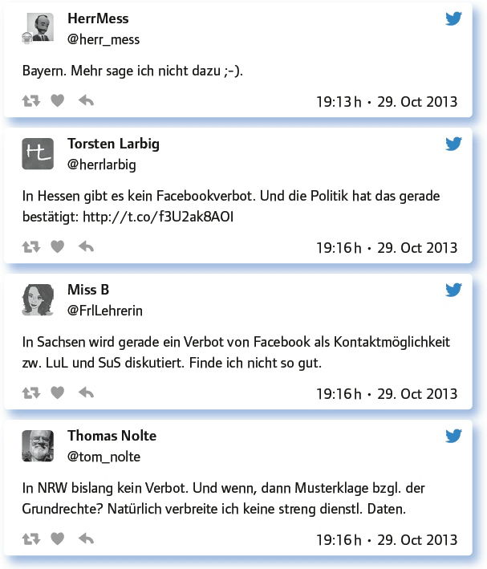
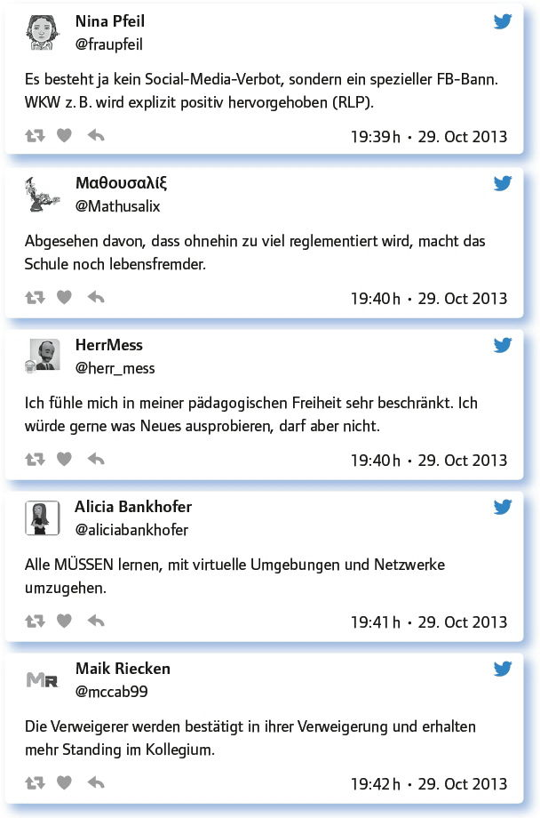
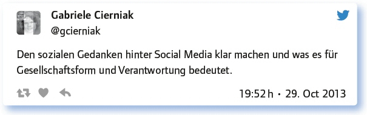

von Torsten Larbig
Die Kommunikation zwischen Lehrern und Schülern ist wichtig. Dem widerspricht niemand. Sobald es aber um die Kanäle geht, derer sich diese Kommunikation bedient, ist Widerspruch nicht weit. Und bei diesem Thema sind wir in einem der Epizentren dessen, was Digitalisierung ausmacht: Kommunikation, Austausch, Kollaboration – kurz: Vernetzung. Sprechen wir also von Kommunikation zwischen Lehrern und Schülern, dann sprechen wir über Formen der Vernetzung. Und ganz abgesehen von Fragen des Datenschutzes, die auftauchen, wenn man sich der unter Jugendlichen jeweils aktuellen Kommunikationsplattformen bedient, taucht für alle Seiten die Frage nach der Trennung von Arbeitszeit und Freizeit auf. Vernetzung lebt ein Stück weit davon, dass Grenzen verschoben werden. Wie weit diese Verschiebung gehen darf und soll, das ist die Streitfrage, um die es bei dem Thema „Social Medial als Kontaktmöglichkeit Schülern/Lehrern verbieten oder nutzen“. Dieser #EDchatDE spiegelt den Stand von 2013 wider, aber an der Grundfrage hat sich wenig geändert …
Knüpfen wir zunächst bei den Gegebenheiten an:
Wie kommunizierst du mit Schülern außerhalb des Unterrichts/der Schule?
Als Pfarrer fand ich die Residenzpflicht was Schönes, da trifft man SuS auch auf der Straße und kann Pläuschchen halten.
Ich finde es schade, dass so viele LuL bewusst weit weg von ihrer Schule wohnen.
Die Kleinen rufen mich an, mit den Großen kommuniziere ich per E-Mail oder über Edmodo – es kommt auf das Fach und das Alter an.
Sehr unterschiedlich: viel über E-Mail, Moodle, zunehmend über FB.
E-Mail, Google-Drive, Whatsapp (wichtig, weil es alle haben).
Wichtig finde ich, im Zweifelsfall den Weg zu nehmen, der den Schülern bekannt ist – in der „Kuschelzone“. Darum derzeit FB.
Hauptkommunikationsmittel sind das Klassenwiki und „Fachwiki“, aber das geht ja nur in eine Richtung.
Neben die Nutzung digitaler Kommunikationsplattformen, unter denen die Nutzung von Facebook mittlerweile auf ältere „Jugendliche“ schließen lässt, tritt die administrative Herausforderung, wie man mit solchen immerhin kommerziell und nicht immer mit den Datenschutzvorstellungen der Schuladministration konformen Plattformen von Verordnungsseite her umgeht. Während Baden-Württemberg die Nutzung verbietet, weist Hessen die Lehrkräfte auf die Risiken hin und vertraut auf deren Kompetenz, Verantwortung auch in diesen Kontexten zu übernehmen. Es ist also naheliegend, in jedem Fall zu recherchieren, wie es im eigenen Bundesland aussieht. Hier ein paar Beispiele, alles Stand 2013.
Sind Social Media in deinem Bundesland erlaubt oder verboten?

Wie gesagt: Wir dokumentieren hier den Stand 2013, der sich in vielen Fällen nicht verändert haben dürfte. Einfach einmal recherchieren … – Wie auch immer: Fakt ist, dass Social Media als Kommunikationsplattform heute im Grunde Standard geworden ist und noch verbreiteter als 2013 sind. Von daher liegt die Frage nahe, was eigentlich passiert, wenn man es nutzt … – Hier empfehle ich dringend das gesamte Chatprotokoll im Wiki auf EDchatDE zu lesen, da wir hier nur eine Auswahl bringen. Das Gesamtbild: Wenige berichten von schlechten Erfahrungen, viele von guten bzw. davon, dass die Nutzung völlig unauffällig verläuft, und einige wollen sich nicht zu sehr in die Lebenswelt der Jugendlichen einklinken …
Whatsapp geht sehr schnell, Google-Docs geht sehr kollaborativ und E-Mail geht sehr differenziert.
Facebook lief nicht gut. Nie war eine ganze Klasse dort. Auch die Beteiligung war nicht größer als bei Moodle.
Gute: Schüler gehen sehr verantwortungsvoll damit um, z. B. bei fragwürdigen Kommentaren von Außen im Kursblog. Auch stille Schüler äußern sich mehr, da sie nicht unter Druck gesetzt werden, sofort zu antworten. Schüler fragen bei Kollegen nach, ob sie bestimmte Sachen nicht in einem Wiki machen können, ist doch viel praktischer.
Ich halte das für einen Raum der Jugendlichen. Ich gehe ja auch nicht in deren Diskos und Clubs.
Schlechte: Nur langsames Internet zu Hause, Schüler vergessen, dass ich auch in FB (also doch) als Lehrerin bin.
Ich brauche einen geschlossenen, nicht mit kommerziellen „Nebenspielchen“ belasteten Lernraum. Also auch kein Google+.
Woran aber liegt es, dass es doch überraschend viele Lehrkräfte gibt, die sich sozialer Medien bedienen?
Welche Vorteile siehst du in der Nutzung von Social Media mit Schülern?
Um solche Schüler zu erreichen, die für eine Wortmeldung zu scheu sind. Auch um andere Herangehensweisen zu finden. Kontakt!
Für Schulen ohne vernünftige Netzwerkausstattung ist das manchmal ein Gebot des Pragmatismus.
So allgemein gefragt ist dies schwierig zu beantworten. Wert in sich („Medienkompetenz“) und unkompliziert.
Es ist nicht direkt ein Vorteil, aber durch die Social Media erleben SuS mich als Lernenden. Finde ich auch nicht schlecht.
Öffnung des Unterrichts – Überprüfbarkeit von außen fördert die Selbstdisziplin.
Vorteil, dass Lernende SocMed konstruktiv und nicht als „gelbe Seiten“ nutzen und es ein normales Tool wird.
Und wie ist das mit den Verboten, die es teilweise gibt? Gibt es Gründe, die gegen diese sprechen?

Ein schönes Fazit im Rahmen des freien Austausches am Ende jeder Ausgabe des #EDchatDE:

Fazit:
Seit 2013 haben sich soziale Medien noch stärker als alltägliche Formen der Kommunikation, des Austausches und der Vernetzung etabliert. Selbst Teilgeber des #EDchatDE, die sich 2013 noch kritisch zurückhaltend äußerten, sind heute teilweise deutlich unbefangener unterwegs. Was aber an kritischer Reflexion der gesellschaftlichen Prozesse, die mit der Digitalisierung allgemein und den sozialen Medien im speziellen verbunden sind, im Unterricht läuft oder auch nicht läuft, das bedarf nach wie vor der Aufarbeitung. Und so ist es mal wieder Zeit für ein kurzes Innehalten und Nachdenken über die eigenen Aktivitäten, sowohl bei der Nutzung sozialer Medien als auch bei der Reflexion der Bedeutung sozialer Medien – für das gesellschaftliche Zusammenleben, aber eben auch für die jeweiligen Fachdidaktiken. Kann man Social Media nicht nur zur Kommunikation, sondern auch zum Lernen nutzen? Der #EDchatDE ist auf diese Frage eine positive Antwort, denn er bedient sich Twitter. Und das ist sicher ein soziales Medium …
Link zum vollständigen Protokoll: